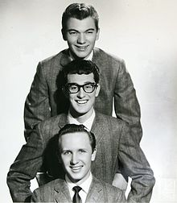

La historia del Rock N' Roll
El rock and roll (también rock 'n' roll o rock & roll), en español rock and roll. Es un género musical de ritmo marcado, derivado de una mezcla de diversos géneros de música folclórica estadounidense, (doo wop, rhythm and blues, hillbilly, blues, country y western son los más destacados) y popularizado desde la década de 1950. El cantante más representativo fue Elvis Presley; su guitarrista más influyente, Chuck Berry; su pianista más importante, Jerry Lee Lewis y sus bandas más representativas, Eddie Cochran, Little Richard, Buddy Holly y Bill Haley and The Comets, entre otros. La expresión rock and roll ya venía utilizándose en las letras del rhythm and blues desde finales de la década de 1930, pero fue el locutor estadounidense Alan Freed quien comenzó a utilizarla para describir el estilo. Ver más...